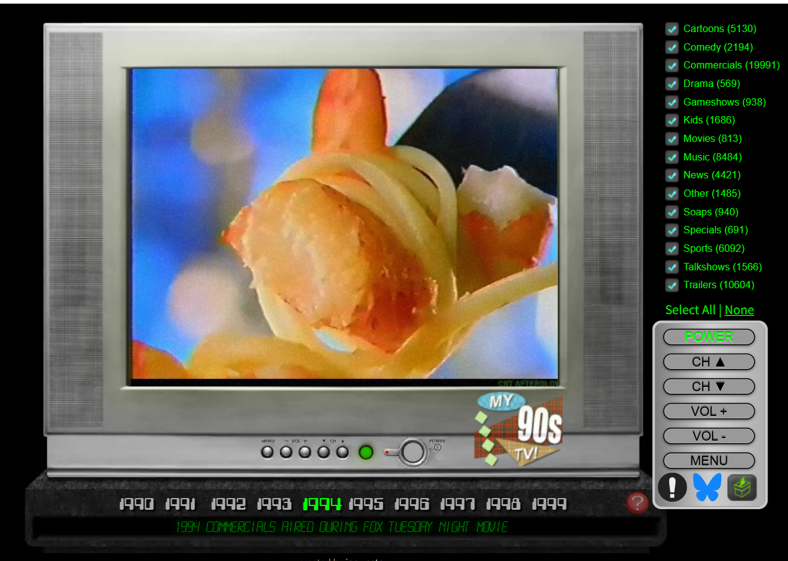
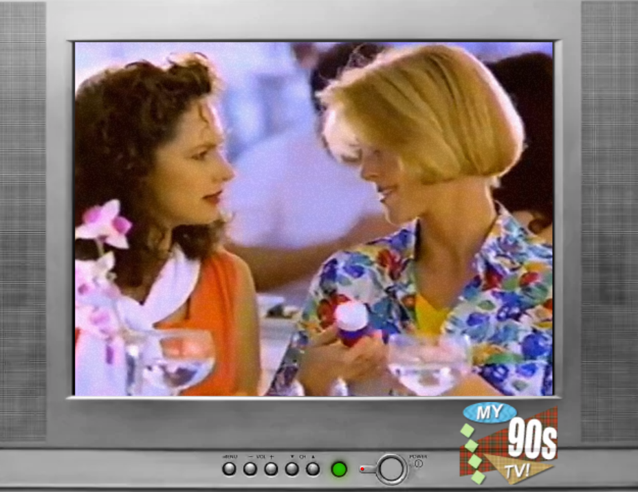
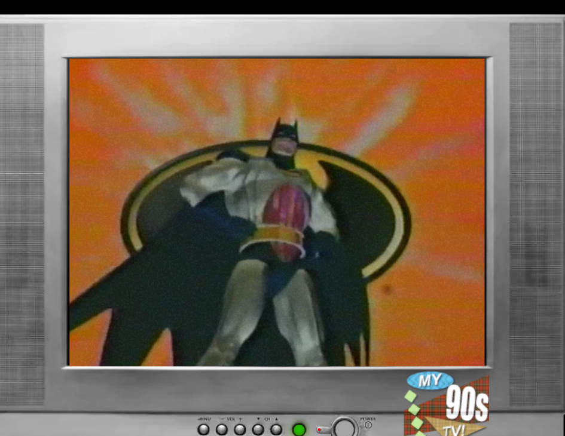

90년대 tv 광고, 스포츠, 드라마, 음악, 뉴스, 카툰, 영화 등등 (미국판) 을 무제한으로 틀어놓고서 꿀잠잘 수있다.
오른쪽엔 년대별로 tv를 바꿀수도있음 60-70-80년대 2000년대
아래엔 1991, 1992 ~ 1999 년도 별로 정확한 연도를 선택해서 볼수있다.
이 모든게 아카이빙 되어있다는게 좀 무섭기도하고 대단하기도한듯..
난 주로 영화채널, 음악채널 틀어놓는데 옛날 음악이 주는 뭉클함이 있다..
진짜 없던 추억도 생각남..
옛날 카툰채널도 언어는 몰라도 재미있다
미국영화같은데 보면 가끔 어린애들이 티비앞에 앉아서 정신팔려있는 이유를 알게된다
사이트는 여기임

오 신기하다 개추